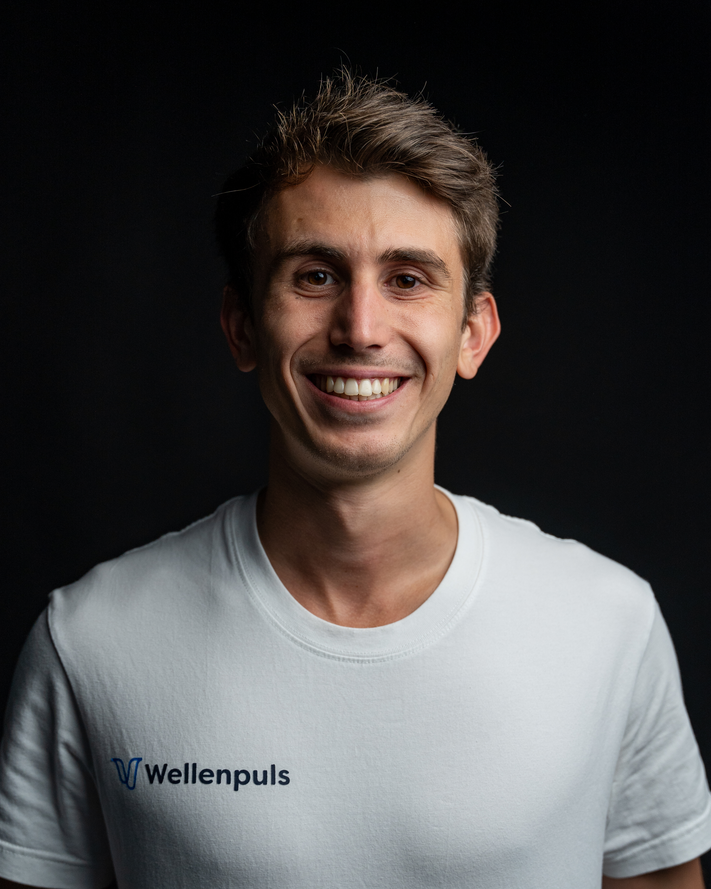
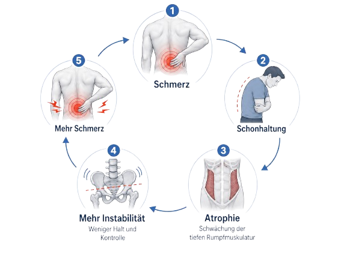

Training für den unteren Rücken, während Sie auf dem Sofa sitzen
Rückentraining für Ihre Mutter oder Ihren Vater, ganz ohne Übungen
Der Wellenpuls LWS trainiert die tiefe Rückenmuskulatur. Zweimal pro Woche 20 Minuten, mit Wärme, ohne Übungsprogramm.
Er trainiert die tiefe Rückenmuskulatur, während Ihre Eltern fernsehen oder lesen. Vier Tasten, kein Handy, keine App.
- Wellenpuls LWS mit Reiseetui, Sprühflasche, Ladekabel und Verlängerungsteil489,00 €
- Persönliches Gespräch mit Christian, dem Gründergratis
120,00 € - Videokurs: Die 3 häufigsten Fehler bei Rückenschmerzengratis
79,00 € - E-Book und Checkliste: Ihr Startplan für den Rückengratis
34,90 € - Versand, Lieferung in 2 Werktagengratis
9,90 €
Einmalige Zahlung, kein Abo. Bezahlen per PayPal oder Karte.
Jetzt bestellen und 30 Tage testen- 30 Tage Geld-zurück-Garantie. Hilft er Ihnen nicht, bekommen Sie den vollen Kaufpreis zurück.
- Kostenloser Versand, Lieferung in 2 Werktagen.
- Auf Wunsch direkt an die Adresse Ihrer Eltern.
So funktioniert der Wellenpuls
Ein sanfter Impuls spannt die tiefe Rückenmuskulatur an und lässt sie wieder los, 20 Minuten lang, während Sie sitzen.
Entwickelt von einem Sportwissenschaftler, der selbst jahrelang Rückenschmerzen hatte

Christian Senfleben hat an der Deutschen Sporthochschule Köln seinen Master in Human Technology in Sports and Medicine gemacht. In seiner Abschlussarbeit ging es um die tiefe Rumpfmuskulatur, die bei Menschen mit Rückenschmerzen oft geschwächt ist.
Für seine Studie brauchte er ein Gerät, das genau diese Muskeln erreicht. Es gab keins, also hat er es gebaut und mit 60 Teilnehmenden über acht Wochen getestet. Danach wollten Teilnehmende die Prototypen kaufen. So ist Wellenpuls entstanden.
- Patent angemeldet im Juni 2024
- Gefördert vom Land NRW, vom Bund und von der EU, ausgezeichnet mit Forschungs- und Innovationspreisen
- Ein deutsches Unternehmen. Bei Fragen erreichen Sie Christian persönlich per E-Mail.
So beschreiben es viele, die unseren Rücken-Check gemacht haben
So beschreiben Betroffene ihre Beschwerden. Vielleicht erkennen Sie Ihre Eltern wieder.
- Der Schmerz sitzt mittig im unteren Rücken und zieht sich breit wie ein Gürtel.Manchmal zieht er bis ins Bein.
- Er kommt nach langem Stehen, nach einem längeren Spaziergang oder nach einer Stunde im Sitzen.Im Auto, am Schreibtisch, im Wartezimmer.
- Nachts ist es schwer, eine gute Lage zu finden. Morgens ist man nicht richtig ausgeruht.
- Das geht schon Monate so, bei vielen seit Jahren.
Irgendwann kommt zum Schmerz der Ärger über die Zeit, die er gekostet hat. Die Wanderung, die Sie abgesagt haben. Die Gartenarbeit, die jetzt jemand anderes macht. Die Jahre, in denen Sie immer vorsichtiger geworden sind.
Als Sohn oder Tochter ist das schwer mit anzusehen. Die Eltern werden vorsichtiger, gehen weniger raus, und die Übungen vom Physiotherapeuten liegen in der Schublade. Man sagt es ihnen, und es ändert sich nichts. Und im Hinterkopf steht die Frage, wie lange sie noch allein zurechtkommen.
Warum Übungen allein oft nicht reichen
Ihre Wirbelsäule wird von einer tiefen Muskelschicht gehalten, die direkt an den Wirbeln ansetzt. Wenn der Rücken lange schmerzt, schont der Körper diese Muskeln. Sie werden schwächer, die oberflächlichen Muskeln übernehmen ihre Arbeit und verkrampfen. Dann tut der Rücken beim Stehen, Gehen und Sitzen noch schneller weh.
Rückenübungen können diese Muskeln wieder stärken. Dafür müssen sie über Wochen regelmäßig und sauber gemacht werden. Daran scheitern die meisten, und das liegt selten an fehlendem Willen. Ein voller Alltag, ein schlechter Tag, und das Programm bleibt liegen.

Der Wellenpuls setzt an dieser Stelle an. Der Gurt bringt die tiefe Rückenmuskulatur dazu, sich anzuspannen, während Sie sitzen. Sie müssen keine Übung richtig ausführen und keinen Termin einhalten.
TENS, EMS, NMES: Wo ist der Unterschied?
Bei Strom am Rücken denken viele an das Kribbelgerät vom Orthopäden oder an Bauchgürtel aus der Werbung. Technisch arbeiten viele dieser Geräte ähnlich. Der Unterschied liegt darin, wofür sie gebaut sind.
- TENS-Gerät
- Ein schwacher Strom überlagert die Schmerzsignale. Das kann für ein paar Stunden lindern. Die Muskulatur trainiert TENS nicht.
- EMS-Gürtel für Bauch, Po oder Beine
- Sie lassen die oberflächlichen Muskeln kräftig zucken. Gedacht sind sie für Fitness und Figur.
- EMS im Studio
- Ganzkörperanzug, fester Termin, Trainer vor Ort, meist mit Abo.
- NMES im Wellenpuls LWS
- Neuromuskuläre Elektrostimulation, wie sie Kliniken und Rehazentren seit Jahrzehnten einsetzen, etwa nach Operationen. Der Wellenpuls richtet sie gezielt auf die tiefe Muskulatur im unteren Rücken. Lage der Elektroden, Intensität und Anwendungsprotokoll stammen aus Christians Studie. Dazu kommt Wärme.
So einfach ist die Anwendung
Christian zeigt Ihnen in einer Minute, wie Sie den Gurt anlegen und einschalten.
Befeuchten
Die Elektroden innen im Gurt mit etwas Wasser besprühen. Die Sprühflasche liegt bei.
Anlegen
Den Gurt um den unteren Rücken legen, leicht oberhalb der Hüfte, und mit dem Klettverschluss festziehen.
Einschalten
Das Gerät startet auf Stufe 1. Mit Plus erhöhen Sie, bis Sie spüren, wie sich der Rumpf zusammenzieht. Nach 20 Minuten schaltet es sich selbst ab.
Zweimal pro Woche, mit mindestens einem Tag Pause dazwischen. So war es auch in der Studie. Am Anfang kann es Muskelkater geben, wie nach jedem ungewohnten Training.
Was der Wellenpuls kann, und was Sie davon haben
Schaltet nach 20 Minuten selbst ab
Sie können dabei lesen, fernsehen oder die Augen zumachen. Auf die Uhr schauen müssen Sie nicht.
15 Stufen, Start auf Stufe 1
Sie fangen sanft an und steigern sich in Ihrem Tempo, von Woche zu Woche.
Eingebaute Wärme
Die Wärme macht das Anlegen angenehm und entspannt verspannte Muskeln.
Vier Tasten am Gurt
Ein und Aus, Plus, Minus, Wärme. Kein Handy, keine App, nichts einzurichten.
Elektroden im Gurt eingearbeitet
Keine Klebepads und kein Gel zum Nachkaufen. Etwas Wasser aus der Sprühflasche genügt.
Passt bei 78 bis 130 cm Bauchumfang
Ein Verlängerungsteil liegt bei, falls der Gurt nicht reicht.
Akku mit USB-Ladekabel, Reiseetui
Laden wie ein Handy. Im Etui kommt er mit in den Urlaub oder zu den Kindern.
Persönliches Gespräch mit Christian
Er zeigt Ihnen, welche Stufe für Sie passt und wie Sie die zwei Einheiten fest in Ihre Woche einbauen.
30 Tage Geld-zurück-Garantie. Kostenloser Versand.
Was Kundinnen und Kunden schreiben
„Mein Vater arbeitet seit 30 Jahren auf dem Bau. Er hat schon vieles ausprobiert. Der Rücken fühlt sich um Welten entspannter an."
„Sehr lange beschäftige ich mich schon mit meinem Rücken. Zum ersten Mal habe ich das Gefühl, etwas gefunden zu haben, was mir wirklich hilft."
„Seit ich den Gurt benutze, fühlt sich mein Rücken so viel besser an. Ich würde es jedem weiterempfehlen."
„Ich und meine Frau sind beide zufrieden. Der untere Rücken fühlt sich entspannter und deutlich gekräftigt an. Klare Kaufempfehlung."
„Die Wärmefunktion entspannt den Rücken spürbar. Absolut empfehlenswert, gerade für den Preis."
„War echt überrascht. Wenn man sich erstmal dran gewöhnt hat, ist das Gefühl wirklich angenehm. Hab natürlich direkt übertrieben und am nächsten Tag tatsächlich einen spürbaren Muskelkater."
30 Tage Geld-zurück-Garantie. Kostenloser Versand.
Für Ihre Mutter oder Ihren Vater bestellen
Wenn Sie den Wellenpuls für Ihre Eltern kaufen, haben Sie wahrscheinlich andere Fragen als jemand, der ihn für sich selbst bestellt.
Kommen meine Eltern mit dem Gerät zurecht?
Der Gurt hat vier Tasten und braucht kein Handy. Eine Gebrauchsanweisung und Christians Video liegen bereit. Im persönlichen Gespräch, das zum Paket gehört, erklärt Christian die Anwendung auch Ihrer Mutter oder Ihrem Vater direkt.
Werden sie ihn auch benutzen?
Das Training findet im Sitzen statt, mit Wärme, 20 Minuten lang. Es fühlt sich nicht nach Sport an, und man kann dabei nichts falsch machen.
Kann ich direkt zu ihnen liefern lassen?
Ja. Im Bestellformular können Sie eine abweichende Lieferadresse angeben. Die Rechnung geht an Sie.
Und wenn es nicht passt?
Sie haben 30 Tage Zeit. Hilft der Wellenpuls nicht, bekommen Sie den vollen Kaufpreis zurück.
So funktioniert die 30-Tage-Garantie
Ob der Wellenpuls zu Ihrem Rücken passt, merken Sie zu Hause. Deshalb haben Sie 30 Tage Zeit.
- Bestellen. Das Paket ist in 2 Werktagen bei Ihnen oder bei Ihren Eltern.
- Ausprobieren. Nutzen Sie ihn vier Wochen lang zweimal pro Woche, so wie in der Studie.
- Entscheiden. Spüren Sie keinen Unterschied, reicht eine E-Mail an Christian. Sie bekommen den vollen Kaufpreis innerhalb weniger Werktage zurück.
Wellenpuls LWS mit Bonus-Paket
Gerät mit Reiseetui und Zubehör, dazu das persönliche Gespräch mit Christian, der Videokurs und das E-Book.
Einmalige Zahlung, kein Abo. Kostenloser Versand.
Jetzt bestellen und 30 Tage testenHäufige Fragen
Wann merke ich etwas?
Ist die Stimulation unangenehm?
Ich habe schon viel ausprobiert. Warum sollte das anders sein?
Kann ich ihn für meine Eltern bestellen?
Für wen ist das Gerät nicht geeignet?
Was passiert im Gespräch mit Christian?
Muss ich ein Abo abschließen?
Probieren Sie es 30 Tage lang aus
Geben Sie Ihren Eltern 30 Tage, um es auszuprobieren
Zweimal pro Woche 20 Minuten im Sitzen, und nach vier Wochen wissen Sie, ob der Wellenpuls etwas verändert. Wenn nicht, schicken Sie ihn zurück.
Wellenpuls bestellen489 € einmalig, kostenloser Versand, 30 Tage Geld-zurück-Garantie